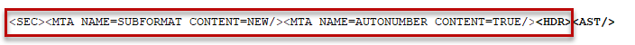

| TAGS |
<MTA/> |
| DESCRIPTION |
This dual-purpose entity tag identifies specialized data specific to each Section. Currently there are two Meta Data tags used to designate Sections containing the Unified Submittal Descriptions and Sections that use Automatic Paragraph Numbering. |
| SOURCE |
Insert menu > Tags or by using the keyboard shortcut F4. |
| RULES |
Must immediately follow the SEC tag and before the HDR tag. Empty tag that contains no data; one of the few tags that does not have an end tag. |
| CHARACTER LIMITATIONS |
None |
 Both MTA tags are automatically inserted when processing a Master. If the MTA tags are missing and need to be re-inserted manually, then Tags and Notes must be visible for proper placement.
Both MTA tags are automatically inserted when processing a Master. If the MTA tags are missing and need to be re-inserted manually, then Tags and Notes must be visible for proper placement.
 When inserting MTA tags, ensure tags and notes are visible. They must be inserted between the SEC and HDR tags, with the MTA tag for the Unified Submittal Descriptions (SUBFORMAT CONTENT=NEW) directly following the SEC tag, and the MTA tag for Automatic Paragraph Numbering (AUTONUMBER CONTENT =TRUE) before the HDR tag as illustrated below:
When inserting MTA tags, ensure tags and notes are visible. They must be inserted between the SEC and HDR tags, with the MTA tag for the Unified Submittal Descriptions (SUBFORMAT CONTENT=NEW) directly following the SEC tag, and the MTA tag for Automatic Paragraph Numbering (AUTONUMBER CONTENT =TRUE) before the HDR tag as illustrated below:

 Watch the SI Editor and Section Structure Overview eLearning module within Chapter 3 - Editing.
Watch the SI Editor and Section Structure Overview eLearning module within Chapter 3 - Editing.
Users are encouraged to visit the SpecsIntact Website's Support & Help Center for access to all of our User Tools, including Web-Based Help (containing Troubleshooting, Frequently Asked Questions (FAQs), Technical Notes, and Known Problems), eLearning Modules (video tutorials), and printable Guides.
| CONTACT US: | ||
| 256.895.5505 | ||
| SpecsIntact@usace.army.mil | ||
| SpecsIntact.wbdg.org | ||